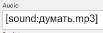
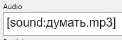

Media files referred to by field values are automatically copied by Anki Script to Anki's media collection when the field
value is set, so there is no need to explicitly copy these files.
Currently Anki Script recognises '.mp3', '.ogg', '.jpg', and '.png' files as media files to be automatically copied.
For media files to be automatically copied field values should refer to them using the form used by Anki, eg:


Other file types will need an explifit copy command in the script:
copy _ankiscript_example.css from media to Anki media collection